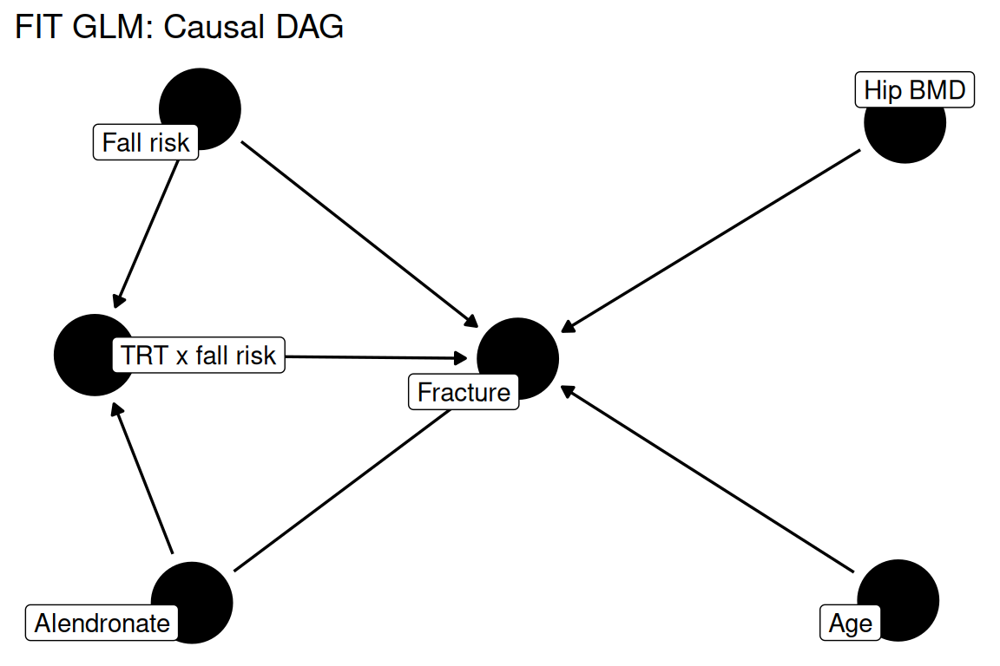
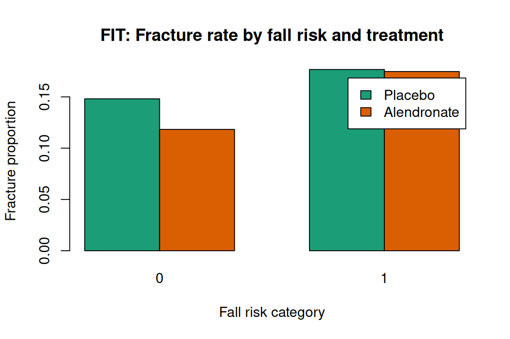

Code
data(rmb_datasets, package = "rmb")
rmb_datasets$study_design[rmb_datasets$object == "fitglm"]
#> [1] "Fracture-risk analysis subset derived from FIT for generalized linear model examples."This article uses the FIT GLM dataset to test whether the treatment benefit of alendronate on fracture risk differs between women with and without high fall risk, illustrating effect modification in logistic regression (RMB2e Chapter 8).
Alendronate reduces fracture risk by increasing BMD and improving bone microarchitecture; however, fracture risk is also determined by the propensity to fall, which is independent of bone strength. Women at high fall risk may experience less relative benefit from BMD-improving treatments because many of their fractures would occur even with stronger bones. Testing for a treatment-by-fall-risk interaction addresses whether the alendronate benefit is heterogeneous across fall risk categories, a key question for precision prevention (RMB2e Ch. 8 / Black 1996).
data(rmb_datasets, package = "rmb")
rmb_datasets$study_design[rmb_datasets$object == "fitglm"]
#> [1] "Fracture-risk analysis subset derived from FIT for generalized linear model examples."Does the treatment benefit of alendronate on fracture risk differ between women with and without high fall risk?
set.seed(42)
dag <- ggdag::dagify(
frx ~ trt + fallrisk + age + bmd + int_trt_fallrisk,
int_trt_fallrisk ~ trt + fallrisk,
labels = c(
frx = "Fracture",
trt = "Alendronate",
fallrisk = "Fall risk",
age = "Age",
bmd = "Hip BMD",
int_trt_fallrisk = "TRT x fall risk"
),
exposure = "trt",
outcome = "frx"
)
ggdag::ggdag(dag, use_labels = "label", text = FALSE) +
ggdag::theme_dag_blank() +
ggplot2::labs(title = "FIT GLM: Causal DAG")
data(fitglm, package = "rmb")
dat <- fitglm
dim(dat)
#> [1] 6459 22
summary(haven::zap_labels(dat[c("trt01", "frx", "riskcat4", "ra_age", "htotbmd")]))
#> trt01 frx riskcat4 ra_age
#> Min. :0.000 Min. :0.0000 Min. :0.000 Min. :54.00
#> 1st Qu.:0.000 1st Qu.:0.0000 1st Qu.:0.000 1st Qu.:64.00
#> Median :1.000 Median :0.0000 Median :0.000 Median :68.00
#> Mean :0.501 Mean :0.1404 Mean :0.177 Mean :68.14
#> 3rd Qu.:1.000 3rd Qu.:0.0000 3rd Qu.:0.000 3rd Qu.:73.00
#> Max. :1.000 Max. :1.0000 Max. :1.000 Max. :81.00
#> NAs :90
#> htotbmd
#> Min. :0.3700
#> 1st Qu.:0.6350
#> Median :0.6980
#> Mean :0.6922
#> 3rd Qu.:0.7540
#> Max. :0.9860
#> NAs :3Logistic regression with a treatment-by-fall-risk interaction term tests whether the alendronate effect on any fracture differs by fall risk category, adjusted for age and total hip BMD (RMB2e Ch. 8). The interaction term directly encodes effect modification on the log-odds scale.
formula_main <- frx ~ trt01 * riskcat4 + ra_age + htotbmd
formula_main
#> frx ~ trt01 * riskcat4 + ra_age + htotbmdwith(dat, table(trt01, frx))
#> frx
#> trt01 0 1
#> 0 2729 494
#> 1 2823 413
with(dat, prop.table(table(trt01, frx), margin = 1))
#> frx
#> trt01 0 1
#> 0 0.8467267 0.1532733
#> 1 0.8723733 0.1276267
with(dat, table(riskcat4))
#> riskcat4
#> 0 1
#> 5242 1127
with(dat, tapply(htotbmd, riskcat4, mean, na.rm = TRUE))
#> 0 1
#> 0.6942090 0.6843141frac_rates <- with(dat, tapply(frx, list(riskcat4, trt01), mean, na.rm = TRUE))
barplot(t(frac_rates),
beside = TRUE,
col = c("#1b9e77", "#d95f02"),
xlab = "Fall risk category",
ylab = "Fracture proportion",
main = "FIT: Fracture rate by fall risk and treatment",
legend.text = c("Placebo", "Alendronate"))
fit_model <- stats::glm(formula_main, data = dat, family = stats::binomial())
summary(fit_model)
#>
#> Call:
#> stats::glm(formula = formula_main, family = stats::binomial(),
#> data = dat)
#>
#> Coefficients:
#> Estimate Std. Error z value Pr(>|z|)
#> (Intercept) -0.460612 0.571371 -0.806 0.42016
#> trt01 -0.248285 0.082221 -3.020 0.00253 **
#> riskcat4 0.157864 0.124975 1.263 0.20653
#> ra_age 0.013772 0.006209 2.218 0.02656 *
#> htotbmd -3.256847 0.425131 -7.661 1.85e-14 ***
#> trt01:riskcat4 0.215669 0.177988 1.212 0.22562
#> ---
#> Signif. codes: 0 '***' 0.001 '**' 0.01 '*' 0.05 '.' 0.1 ' ' 1
#>
#> (Dispersion parameter for binomial family taken to be 1)
#>
#> Null deviance: 5173.2 on 6365 degrees of freedom
#> Residual deviance: 5072.8 on 6360 degrees of freedom
#> (93 observations deleted due to missingness)
#> AIC: 5084.8
#>
#> Number of Fisher Scoring iterations: 4fit_no_int <- stats::glm(frx ~ trt01 + riskcat4 + ra_age + htotbmd,
data = dat, family = stats::binomial())
stats::anova(fit_no_int, fit_model, test = "Chisq")
#> Analysis of Deviance Table
#>
#> Model 1: frx ~ trt01 + riskcat4 + ra_age + htotbmd
#> Model 2: frx ~ trt01 * riskcat4 + ra_age + htotbmd
#> Resid. Df Resid. Dev Df Deviance Pr(>Chi)
#> 1 6361 5074.3
#> 2 6360 5072.8 1 1.4673 0.2258or <- exp(stats::coef(fit_model))
ci <- exp(stats::confint(fit_model))
data.frame(
term = names(or),
odds_ratio = unname(or),
conf_low = ci[, 1],
conf_high = ci[, 2],
p_value = summary(fit_model)$coefficients[, "Pr(>|z|)"]
)
#> term odds_ratio conf_low conf_high p_value
#> (Intercept) (Intercept) 0.63089757 0.20549125 1.93063752 4.201553e-01
#> trt01 trt01 0.78013726 0.66375556 0.91629342 2.529909e-03
#> riskcat4 riskcat4 1.17100644 0.91300785 1.49083075 2.065313e-01
#> ra_age ra_age 1.01386710 1.00162715 1.02631090 2.655578e-02
#> htotbmd htotbmd 0.03850963 0.01671803 0.08853074 1.847774e-14
#> trt01:riskcat4 trt01:riskcat4 1.24069165 0.87506649 1.75898538 2.256248e-01The interaction between treatment and fall risk category tests whether the fracture-prevention benefit of alendronate is uniform or varies with fall risk. The likelihood-ratio test for the interaction provides evidence about effect modification on the log-odds scale, as described in RMB2e Chapter 8. If the interaction is statistically meaningful, subgroup-specific treatment recommendations may be appropriate; if not, a single pooled estimate describes the treatment effect adequately. Lower hip BMD and older age are independently predictive of fracture regardless of treatment assignment.